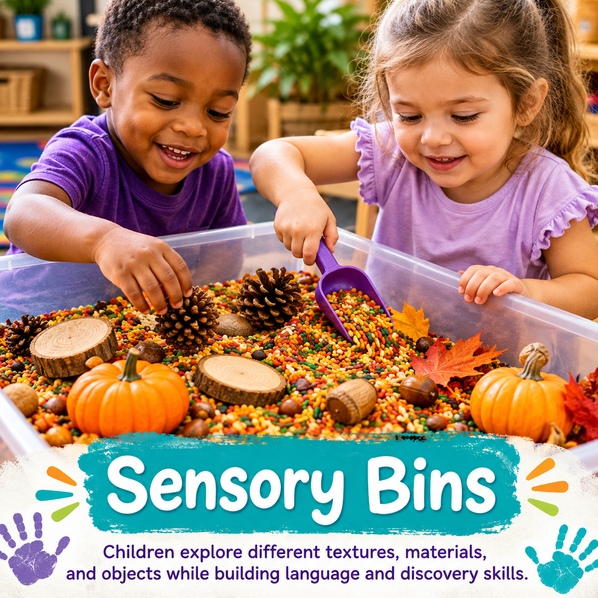
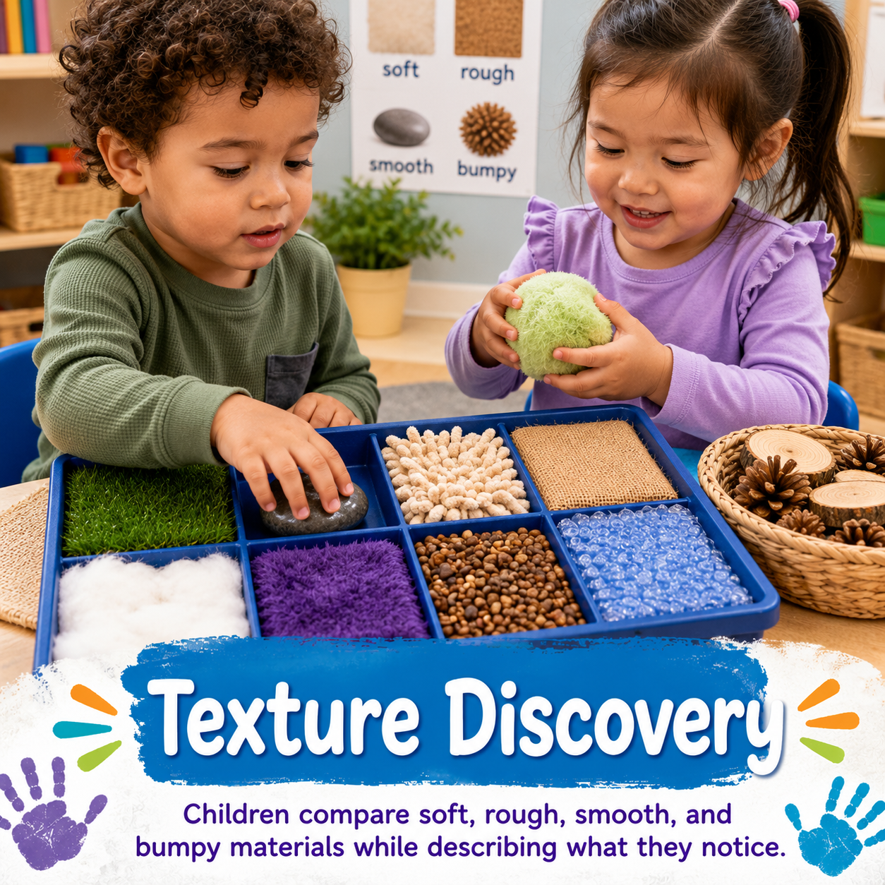
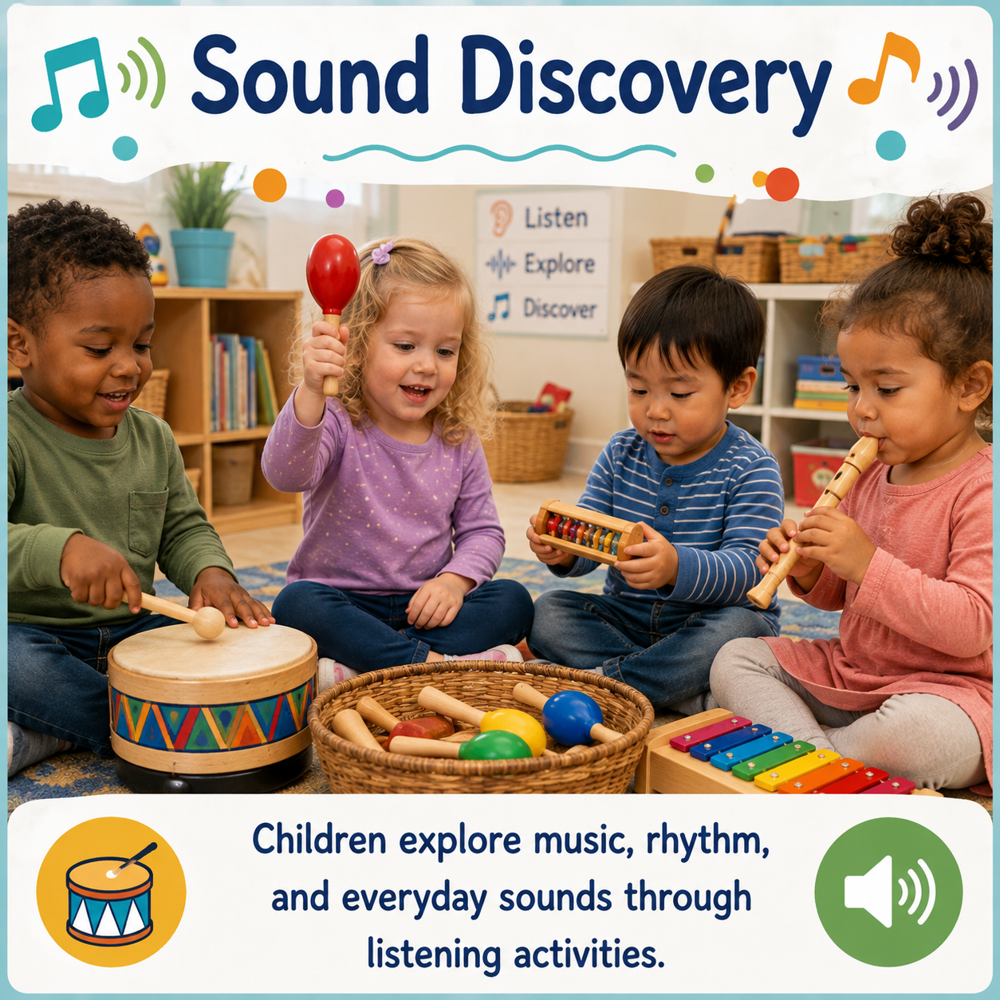
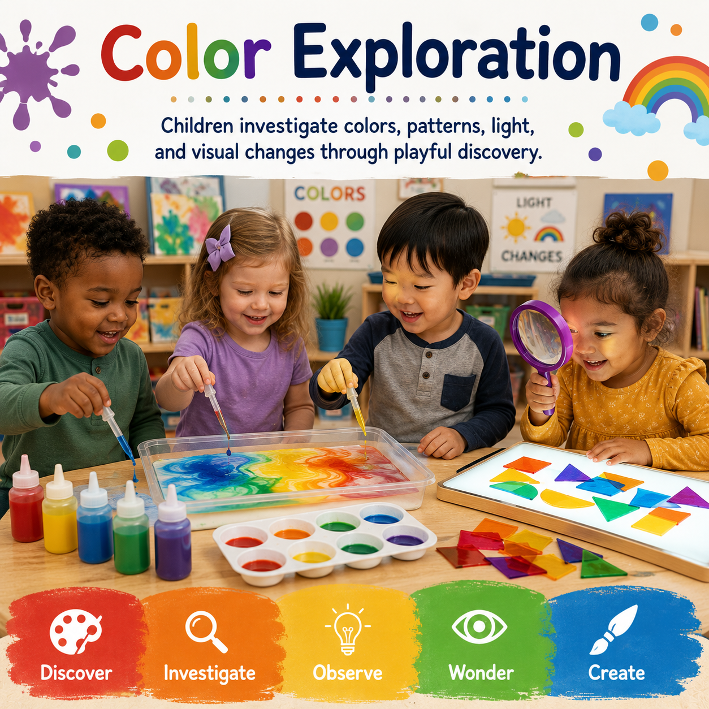

TOUCH
Sensory Bins
Children explore different textures, materials, and objects while building language and discovery skills.
Explore →Sensory activities invite children to touch, listen, observe, create, compare, and investigate while building curiosity, language, problem solving, confidence, and hands-on understanding.
Young children learn by exploring the world around them. Sensory experiences give children opportunities to investigate materials, describe what they notice, develop vocabulary, strengthen fine motor skills, and build confidence through discovery.
Simple experiences that encourage children to explore, observe, investigate, and discover.

Children explore different textures, materials, and objects while building language and discovery skills.
Explore →
Children compare soft, rough, smooth, and bumpy materials while describing what they notice.
Explore →
Children explore music, rhythm, and everyday sounds through listening activities.
Explore →
Children investigate colors, patterns, light, and visual changes through playful discovery.
Explore →Use these categories to plan invitations that match children's interests and developmental needs.
Explore materials, textures, and objects through play.
💧Investigate pouring, measuring, movement, and cause and effect.
👋Compare materials using touch, language, and observation.
👂Discover rhythm, volume, vibration, and listening skills.
🌈Explore color mixing, patterns, light, and visual changes.
🌿Investigate natural materials through meaningful sensory experiences.
Keep the setup simple and let children's questions and discoveries guide the experience.
Children explore hidden objects, scoop materials, and describe what they discover.
Children search for objects that feel smooth, rough, soft, or hard and explain their choices.
Children create simple instruments and compare the sounds they make.
Children make predictions, mix colors, and observe what changes.
Children fill, empty, compare, and talk about what happens when water moves between containers.
Children examine leaves, bark, stones, pinecones, and other safe natural materials.
Look beyond the material itself. Watch for the thinking, language, movement, social interaction, and persistence happening during exploration.
Children investigate materials, notice differences, and learn through hands-on discovery.
Children compare, predict, sort, classify, test ideas, and solve problems.
Children build vocabulary by describing textures, sounds, colors, materials, and experiences.
Scooping, pouring, squeezing, pinching, and manipulating materials strengthen hands and coordination.
Children share materials, communicate ideas, negotiate space, and learn alongside peers.
Children test possibilities, make changes, and persist when an idea does not work the first time.
Document the strategies children use, the words they choose, the materials they return to, and the questions they ask. A sensory invitation can reveal learning across language, cognition, physical development, social emotional development, and approaches to learning.
Pair sensory experiences with learning centers, studies, lesson plans, printables, and age-specific resources to create connected learning experiences.